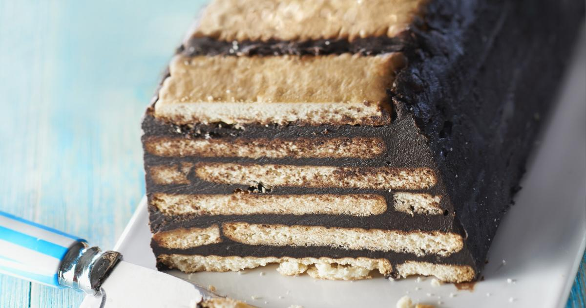

De délicieuses recettes de salade de pommes de terre | La sélection de 750g
2021.03.31 14:52

Podcasts Connexion Inscription Pâques 750Green Recettes Recettes Cocktails Apéritifs Apéritif Dinatoire Entrées Plats Desserts Petit-Déjeuner Sauces Pâtisserie Recettes pas à pas Recettes faciles Ingrédients Viandes Volailles Poissons Oeufs Légumes Fruits Féculents Fromages Voir toutes les recettes Vidéos Vidéos Les vidéos de nos chefs Recettes express Gestes techniques Voir toutes les vidéos En cuisine En cuisine
Cuisiner
Les suggestions 750g Rapidement Végétarien Minceur Pour une fête La cuisine du monde Avec mon Thermomix® Les grands classiques Cuisine de confinement Les recettes de Noël
En apprendre plus
Nutrition / Santé Secrets de cuisine Technique de cuisson Art de la table
Recettes de saison par 750g
Galette des rois Tiramisu Velouté de potiron Cannelés Tartiflette Pommes au four Pâte à crêpes Gratin dauphinois
La cuisine gastronomique avec
Cuisine de saison Actus Actus Vous allez fondre de plaisir avec nos 10 plats 100% fromage Couvre feu : Nos 10 recettes pour manger (presque) comme... Fini la soupe : vous allez adorer ces 6 recettes originales... Sauce, crêpes, plats mijotés : 8 recettes pour utiliser... Voir tous les articles Les coups de pousse Entrées Recettes à base de pommes de terre
Salade de pommes de terre
Salade de pommes de terre
Chaque région de France a SA recette de salade de pommes de terre ! Découvrez toutes les recettes possibles et inimaginables...
Lire la suite Vous regardez : Salade piémontaise
Salade piémontaise maison
Classique, on ne s'en lasse pas.
171 avis Une salade complète et classique qui peut aussi servir de plat unique. Une salade complète et classique qui peut aussi servir de plat unique.
Salade estivale économique
Une salade fraîche et riche en légumes pour accompagner les grillades de viande et poisson !
34 avis Simple, facile et abordable, une salade idéale pour les repas en famille. Simple, facile et abordable, une salade idéale pour les repas en famille.
Salade gourmande d inspiration niçoise
Une salade de pommes de terre nouvelles, haricots verts, oeufs, tomates, olives noires... accompagnée de thon et d'anchois.Le tout nappé d'une onctueuse sauce à base…
43 avis On aime cette salade qui nous rappelle le soleil et les vacances. On aime cette salade qui nous rappelle le soleil et les vacances.
Salade de roquefort, melon et patate en Rubik s Cube
C'est une recette facile à transporter pour un pique-nique et du coup j'ai pensé à une sorte de salade tout en cube et qu'on monte en forme de Rubik's Cube au moment…
1 avis Une jolie présentation, ludique pour les enfants et un goût savoureux. Une jolie présentation, ludique pour les enfants et un goût savoureux.
Salade nordique au cidre
Une salade tout en fraicheur.
12 avis Et si vous proposiez vos salade en bocal pour l entrée ? C est joli et pratique. Et si vous proposiez vos salade en bocal pour l entrée ? C est joli et pratique.
Salade aux deux pommes et haddock
Une jolie salade sucrée salée ! Une recette proposée par Dorian du blog Mais pourquoi est ce que je vous raconte ça ?
4 avis Pomme de terre et Granny, un accord parfait. Pomme de terre et Granny, un accord parfait.
Salade piemontaise SANS mayonnaise
Salade de pomme de terre au jambon, tomates, cornichons, oeufs
43 avis Pour ceux qui adorent la piémontaise mais qui font attention à leur ligne ! Pour ceux qui adorent la piémontaise mais qui font attention à leur ligne !
Salade tiède de Bonnottes de Noirmoutier aux algues et à la fleur de ciboulette
La Bonnotte a besoin de peu pour être sublimée : son coeur balance ici entre Noirmoutier et l'Asie... Cette recette remporte la 2ème place du concours Racontez-nous…
9 avis Un mariage terre et mer très réussi grâces aux crevettes grises et aux algues. Un mariage terre et mer très réussi grâces aux crevettes grises et aux algues.
Salade de pommes de terre et carottes rôties
J'adore la nourriture rôtie au four qui est tellement réconfortante. J'ai créé cette recette en été, suite à une grande envie de légumes rôtis, mais je ne savais pas…
1 avis Une salade surprenante qui change de la classique grâce aux légumes longuement rôtis. Une salade surprenante qui change de la classique grâce aux légumes longuement rôtis.
Salade tiède de pomme de terre, vinaigrette à l oseille et saumon mi-cuit
Une salade tiède de pomme de terre à la vinaigrette à l'oseille et au saumon mi-cuit, très fortement inspirée du saumon à…
Une salade délicieuse qui trouvera sa place dans un menu de fête. Une salade délicieuse qui trouvera sa place dans un menu de fête.
Salade de pommes de terre à la menthe
Originale, une salade de pommes de terre dans une sauce à la crème et à la menthe ; essayez, c'est un délice !
Auriez-vous pensé à allier les pommes de terre à la menthe fraîche ? Testez, vous apprécierez sa fraîcheur ! Auriez-vous pensé à allier les pommes de terre à la menthe fraîche ? Testez, vous apprécierez sa fraîcheur !
Salade de pommes de terre aux tomates séchées
Une salade à déguster tiède et qui accompagnera parfaitement toutes vos grillades (poisson et viande) !
37 avis 1 2 3 4 5 6 Suivante
7 8 9 10 20
Ça fait le buzz !
On ne se prive plus de ces 8 desserts au chocolat peu sucrés
Tarte au kiwi à la ricotta et zeste de citron
Briouates à la viande de boeuf hachée
Brownie au chocolat, banane et noisettes
Un site du Groupe Webedia À propos Contact Newsletter Notifications Commercial Recrutement Mentions légales CGU CPU CGV de l offre payante 750g.com CGV du service 750g Premium sur les applications mobiles Protection des données personnelles Cookies Préférences cookies
Accueil - Président Salade de lentilles, carotte, feta et oeuf mollet. 0/5 (0 avis) Tartare de saumon et sa salade de lentilles (17ème rencontre) 4.9/5 (73 avis) Sauce légère pour salades et crudités. 4.8/5 ... Soif de recettes ? On se donne rendez-vous dans votre boîte mail ! Découvrir nos newsletters.
Salade : nos délicieuses recettes de salade Du fromage, du beurre, de la crème Président c'est la marque qui vous offre toutes les recettes pour prendre la vie côté plaisir.
LES MEILLEURES RECETTES DE CAROTTE De délicieuses recettes de salade de pommes de terre : les 12 recettes coup de cœur, rigoureusement sélectionnées par Chef Damien et Chef Christophe.
Recettes de pommes de terre au four | La sélection de 750g La recette de salade de crevettes est simple et délicieuse, merci. Répondre. Ange marie. 28 mai 2020 à 11 h 46 min . J ai adore c est très rafraîchissant. Manon. 24 mai 2019 à 11 h 04 min . ... Recettes secrètes, recettes faciles, recettes de fast food, recettes du Québec et plein de bacon!
Recette facile de salade de crevettes! - Le Chef Cuisto - faut il mettre du sucre dans la salade de carottes. Merci ( Répondre ) - bonjour, comment conserver les carottes et les choux fleurs ( Répondre ) - Peut on congeler des carottes cuite ou non ( Répondre ) - gratin de lègumes (céleri, poireaux, carottes, pomme de terre ) ( Répondre ) - Bonsoir Combien de temps pour la stérilisation des ...
Les meilleures recettes de chefs du Québec | Recettes-de ... Toutes les recettes de cuisine facile de Supertoinette, illustrées pas à pas, testées et garanties délicieuses. Supertoinette, recettes de cuisine faciles ... Salade fraîcheur de printemps. Voici une petite recette gourmande de salade composée, qui nous annonce le printemps ! Simple et rapide à préparer, elle vous charmera par son mélange.
De délicieuses recettes de salade de pommes de terre | La ... Les pommes de terre au four, c'est simple mais tellement bon. La cuisson se fait le plus souvent en deux temps. Faites cuire vos pommes de terre entières après les avoir piquées de quelques coups de fourchette pendant une heure à 200°C. Fendez-les en deux, retirez la chair, mélangez-la à des herbes, du saumon fumé, du jambon, etc. Placez la garniture dans les coques de pommes de terre ...